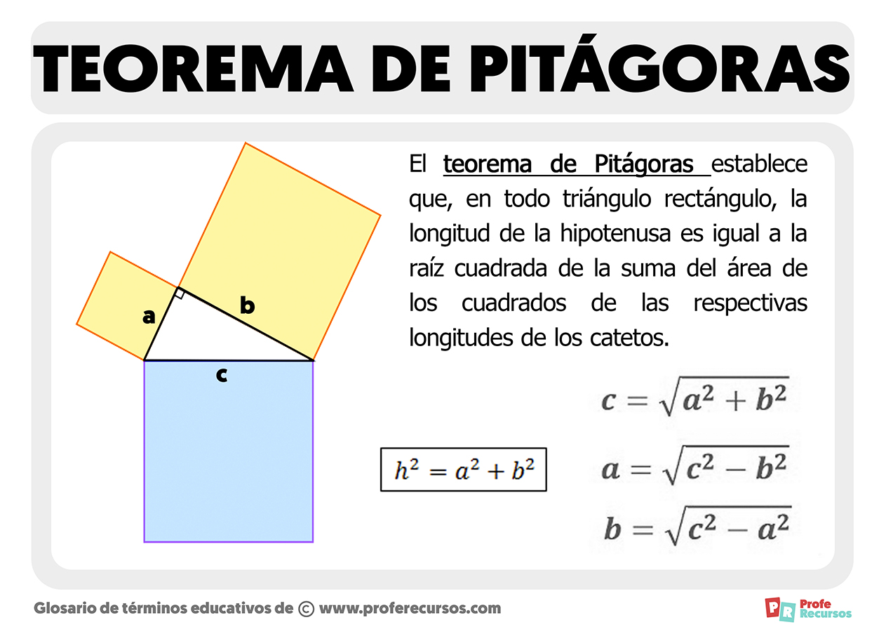

Temas:
Los siguientes temas fueron vistos en la escuela
Teorema de Pitagoras:
Hipotenusa al cuadrado es suma catetos.
- Triángulo rectángulo: Pitágoras esencial.
- Fórmula: a² + b² = c².
- Relación lados en triángulo.
- Matemática, geometría, conexión fundamental.
- Matemática, geometría, conexión fundamental.

Razones Trigonometricas:
Sen, cos, tan, clave trigonometría.
- Seno: altura, hipotenusa, relación.
- Coseno: base, hipotenusa, proporción.
- Tangente: altura, base, proporción.
- Relaciones angulares, claves trigonometría.
- Aplicaciones: modelar ondas, mediciones precisas.
![]()
Razones Trigonometricas para angulos de 30°
Sen 30°, Cos 30°, Tan 30°.
- Seno: 1/2.
- Coseno: √3/2.
- Tangente: √3/3.
- 30 grados, funciones trigonométricas esenciales.
- Triángulo especial, razones trigonométricas clave.

Razones Trigonometricas para angulos de 45°
Seno 45°, Coseno 45°, Tan 45°.
- Seno: √2/2.
- Coseno: √2/2.
- Tangente: 1.
- 45 grados, funciones trigonométricas esenciales.
- Triángulo especial, razones trigonométricas clave.

Razones Trigonometricas para angulos de 60°
Seno 60°, Coseno 60°, Tan 60°.
- Seno: √3/2.
- Coseno: 1/2.
- Tangente: √3.
- 60 grados, funciones trigonométricas esenciales.
- Triángulo especial, razones trigonométricas clave.

Grafica de la funcion seno
Onda sinusoidal: altibajos suaves, repetición.
- Curva ondulante, patrón repetitivo.
- Seno: oscilación suave, forma periódica.
- Onda sinusoidal: variación armónica continua.
- Onda sinusoidal: variación armónica continua.
- Gráfica: fluctuaciones suaves, ciclo constante.

Grafica de la funcion de coseno
Curva cosenoidal: variación armónica, repetición.
- Curva suave, patrón repetitivo.
- Coseno: oscilación, forma periódica.
- Onda cosenoidal: fluctuación continua, repetición.
- Representación visual: picos y valles.
- Gráfica: variación armónica, ciclo constante.

Grafica de la funcion tangente
Linea que se acerca al infinito.
- Línea que se aproxima al infinito.
- Tangente: crecimiento rápido, asintota horizontal.
- Comportamiento vertical: crecimiento y decrecimiento.
- Gráfica: líneas verticales, repetición aparente.
- Representación visual: patrón de oscilación.
![]()
Grafica de la funcion cotangente
Línea decreciente con puntos repetidos.
- Linea decreciente con repetición evidente.
- Cotangente: puntos en patrón descendente.
- Comportamiento inverso: variación constante, repetición.
- Gráfica: líneas horizontales, puntos recurrentes.
- Representación visual: patrón de oscilación inversa.

Grafica de la funcion secante
Líneas verticales alternadas, patrón repetitivo.
- Líneas verticales alternadas, patrón repetitivo.
- Secante: puntos en patrón ascendente.
- Comportamiento inverso: variación constante, repetición.
- Gráfica: líneas horizontales, puntos recurrentes.
- Representación visual: patrón de oscilación inversa.

Identidades trigonometricas reciprocas
Inversas: sec, csc, cot, relacionadas trigonometría.
- Inversas: sec, csc, cot, relaciones.
- Reciprocas: complementan funciones trigonométricas básicas.
- Relaciones fundamentales: sec x = 1/cos x, csc x = 1/sen x, cot x = 1/tan x.
- Complementarias: secante, cosecante, cotangente, esenciales.
- Identidades: relaciones fundamentales entre funciones trigonométricas.

Indetidades Trigonometricas Cociente
Sen, cos, tan, clave trigonometría.
- Cociente: tan, cot, sec, csc.
- Relaciones esenciales: cotangente, secante, cosecante.
- Identidades trigonométricas: relaciones fundamentales, cocientes.
- Razones trigonométricas: tan x = sen x/cos x, cot x = cos x/sen x.
- Vínculos esenciales: sec x = 1/cos x, csc x = 1/sen x.

Identidades trigonometricas mediante el teorema de Pitagoras
Pitagoras: sen, cos, tan, fundamentales.
- Pitágoras: seno, coseno, tangente, clave.
- Relaciones esenciales: sen² + cos² = 1.
- Teorema de Pitágoras: base trigonométrica fundamental.
- Identidades fundamentales: csc² = 1 + cot², sec² = 1 + tan²..
- Identidades fundamentales: csc² = 1 + cot², sec² = 1 + tan².